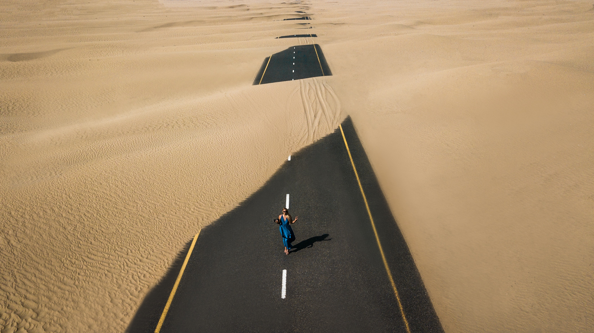

<div class="app__home home">
   <div class="home__banner">
      <div class="home__banner">
         <div class="home__static-banner">
            <div class="home__static-banner-text">
               <p class="slider__text">Let's start the journey</p>
            </div>
            
         </div>
         <div class="img-slider">
            <div class="slide active">
               <div class="slide-overlay"></div>
               
               <div class="info">
                  <p class="slider__text">Let's start the journey</p>
               </div>
            </div>
            <div class="slide">
               <div class="slide-overlay"></div>
               
               <div class="info">
                  <p class="slider__text">Search your next destination</p>
               </div>
            </div>
            <div class="slide">
               <div class="slide-overlay"></div>
               
               <div class="info">

                  <p class="slider__text">Open amazing places in the world</p>
               </div>
            </div>
            <div class="slide">
               <div class="slide-overlay"></div>
               
               <div class="info">
                  <p class="slider__text">Share your experience with the world</p>
               </div>
            </div>
            <div class="navigation">
               <div class="btn active"></div>
               <div class="btn"></div>
               <div class="btn"></div>
               <div class="btn"></div>
            </div>
         </div>
      </div>
      <div class="home__container popular-posts">
         <h2 class="popular-posts__title">All Posts</h2>
         <div class="popular-posts__icon-wrapper">
            
         </div>
         <p class="popular-posts__text">Start your journey with our top travelers and their stories</p>
         <div class="popular-posts__slider">
            <div *ngIf="isAllPostsLoading == true">
               <app-spinner [topPosition]="['30%']"></app-spinner>
            </div>
            <div *ngIf="posts.length && isPublicPostsLoading == false">
               <app-swiper-slider [posts]="posts"></app-swiper-slider>
            </div>
         </div>
      </div>
      <div class="home__parallax-container parallax">
         <div class="parallax__wrapper">
            <div class="parallax__item ">
               <div class="parallax__overlay"></div>
               <div class="parallax__posts-container">
                  <div class="parallax__posts-content">
                     <h2 class="parallax__posts-title  posts">Popular posts</h2>
                     <div class="parallax__item-content">
                        <div class="posts__icon-wrapper post__title_invisible">
                           
                        </div>
                        <h6 class="posts__text">Our more popular posts with amazing experiences</h6>
                     </div>
                  </div>
                  <div class="posts__slider">
                     <div *ngIf="isPublicPostsLoading == true">
                        <app-spinner [topPosition]="['60%']"></app-spinner>
                     </div>
                     <div *ngIf="posts.length && isPublicPostsLoading == false">
                        <app-popular-posts-slider [posts]="popularPosts"></app-popular-posts-slider>
                     </div>
                  </div>
               </div>
            </div>
            <div class="parallax__item" id="parallax">
               <div class="parallax__item-content gallery">
                  <h2 class="gallery__title">Gallery</h2>
                  <div class="popular-posts__icon-wrapper">
                     
                  </div>
                  <h6 class="gallery__text">Here you can enjoy amazing views of our planet</h6>
                  <div class="gallery__content">
                     <a target="_blank" href="../../../assets/images/tokyo.jpg">
                        
                     </a>
                     <a target="_blank" href="../../../assets/images/banner/iceland.jpg">
                        
                     </a>
                     <a target="_blank" class="gallery__invisible" href="../../../assets/images/banner/ocean.jpg">
                        
                     </a>
                     <a target="_blank" class="gallery__invisible" href="../../../assets/images/banner/sands.jpg">
                        
                     </a>
                     <a target="_blank" class="gallery__invisible" href="../../../assets/images/banner/turkey.jpg">
                        
                     </a>
                     <a target="_blank" class="gallery__invisible" href="../../../assets/images/banner/asia.jpg">
                        
                     </a>
                  </div>
               </div>

            </div>
            <div class="parallax__item travel-tips">
               <div class="parallax__overlay"></div>
               <div class="travel-tips__wrapper">
                  <div class="parallax__item-content travel-tips__title">Travel tips</div>
                  <p class="travel-tips__text">
                     Travel savviness is a process born of missed buses, foolish behavior, cultural unawareness, and
                     countless tiny errors.
                     Then, one day, you begin to seamlessly move through airports and integrate yourself into new
                     cultures like a fish to water.
                  </p>
                  <p class="travel-tips__text">
                     I want to help speed up the process and help you avoid my mistakes (and I often make a lot of
                     them),
                     so I put together this giant list of my best travel tips that cover everything under the sun to
                     help you reach your full travel ninja potential.
                  </p>
                  <a href="https://vimeo.com/303077660" target="_blank" class="travel-tips__play">
                     
                  </a>
               </div>

            </div>
            <div class="parallax__item">
               <div class="parallax__item-content events">
                  <p class="events__title">Pack up and Go</p>
                  <div class="events__icon-wrapper">
                     
                  </div>
                  <p class="events__text">Amazing events for traveling the world to experience</p>

                  <div class="container">
                     <div class="row">
                        <div class="col-lg-12">
                           <div class="featuredPropBox">
                              <ul>
                                 <li> <a href="https://www.cntraveller.com/gallery/events-around-the-world"
                                       target="_blank">
                                       <div class="fplogo">Carnevale di Venezia, Italy</div>
                                       <div class="fptext">
                                          <p>Seeing the city awash with elaborate period costumes and distinctive masks
                                             is a big draw, but there are also canal parades, competitions, street
                                             performances, masquerade balls and fancy suppers</p>
                                       </div>
                                    </a> </li>
                                 <li> <a href="https://www.cntraveller.com/gallery/events-around-the-world"
                                       target="_blank">
                                       <div class="fplogo">Monarch butterfly migration, mexico</div>
                                       <div class="fptext">
                                          <p>Every autumn, millions of monarch butterflies leave North America’s chilly
                                             temperatures and journey around 3,000 miles to a sprawling, far-warmer
                                             forested area in central Mexico for five months. </p>
                                       </div>
                                    </a> </li>
                                 <li class="events__invisible"> <a
                                       href="https://www.cntraveller.com/gallery/events-around-the-world"
                                       target="_blank">
                                       <div class="fplogo">Cherry blossom, Mount Yoshino, Japan</div>
                                       <div class="fptext">
                                          <p>Japan’s Instagram-breaking cherry blossom trees can be viewed from numerous
                                             locations during their spring bloom, but Mount Yoshino remains the most
                                             revered, and it’s hard to argue with its popularity. </p>
                                       </div>
                                    </a> </li>
                                 <li class="events__invisible"> <a
                                       href="https://www.cntraveller.com/gallery/events-around-the-world"
                                       target="_blank">
                                       <div class="fplogo">Temecula Valley Balloon and Wine Festival, US</div>
                                       <div class="fptext">
                                          <p>See Temecula’s spectacular vineyards from above as you drift over in a
                                             balloon, before sampling the goods when you land at daily wine tastings –
                                             local microbreweries will be on-hand if beer’s more your thing.</p>
                                       </div>
                                    </a> </li>
                                 <li class="events__invisible"> <a
                                       href="https://www.cntraveller.com/gallery/events-around-the-world"
                                       target="_blank">
                                       <div class="fplogo">Montreux Jazz Festival, Switzerland</div>
                                       <div class="fptext">
                                          <p>Nowadays, jazz is just one component of this highly respected festival. The
                                             2022 line-up is still under wraps, but considering Montreux has hosted
                                             everyone from Nina Simone to David Bowie to Kendrick Lamar over the years,
                                             assume you’re in safe hands. .</p>
                                       </div>
                                    </a> </li>
                                 <li class="events__invisible"> <a
                                       href="https://www.cntraveller.com/gallery/events-around-the-world"
                                       target="_blank">
                                       <div class="fplogo">Abergavenny Food Festival, Wales</div>
                                       <div class="fptext">
                                          <p>Any self-respecting – or just hungry – foodie needs to visit this market
                                             town’s acclaimed annual festival, when chefs, traders, producers and
                                             punters from around the UK gather in the streets to cook, eat, drink, talk
                                             and eat some more. </p>
                                       </div>
                                    </a> </li>

                              </ul>
                           </div>
                        </div>
                     </div>
                  </div>

               </div>
            </div>
            <div class="parallax__item">
               <div class="parallax__overlay"></div>
               <div class="parallax__item-content slideshow">
                  <div class="slideshow-container">
                     <h2 class="parallax__posts-title posts">Interest facts from our travellers</h2>
                     <div class="posts__icon-wrapper">
                        
                     </div>
                     <div class="mySlides">
                        <q>Travel Makes You Smarter. ...
                           Travel Can Strengthen Your Heart.</q>
                        <p class="author">John Smith, UK</p>
                     </div>

                     <div class="mySlides">
                        <q>The Longest Flight Was Around 30 Hours</q>
                        <p class="author">Susan Doe, USA</p>
                     </div>

                     <div class="mySlides">
                        <q> Atlanta’s Hartsfield-Jackson Airport Is the World’s Busiest</q>
                        <p class="author">Olivia Frank, Germany</p>
                     </div>
                  </div>

                  <div class="dot-container">
                     <span class="dot quotes1" onclick="currentSlide(1)"></span>
                     <span class="dot quotes2" onclick="currentSlide(2)"></span>
                     <span class="dot quotes3" onclick="currentSlide(3)"></span>
                  </div>
               </div>
            </div>
            <footer>
               <div class="footer">
                  <h2 class="footer__title">Newsletter signup</h2>
                  <div class="footer__icon-wrapper">
                     
                  </div>
                  <p class="footer__text">Subscribe to our weekly newsletter to get updated on our latest deals</p>
                  <div class="footer__form">
                     <input type="text" class="form__control">
                     <a href="/register" class="form__button">Sign Up</a>
                  </div>
                  <p class="footer__copyright">2022@DiscoverWorld</p>
               </div>
            </footer>

         </div>
      </div>

   </div>